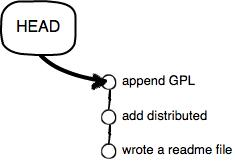

Git工作流
Presented by Zhang, Zijian
版本控制？but why？


项目经理说：“要有结构”

如雷贯耳的名字
最早的：Source Code Control System (1972)
C-S架构：Subversion (2000)
分布式架构：Git (2005)

开始工作
git init
.git
|-hooks //执行特定动作时触发的hook
|-info //包含exclude文件
|-logs //commit log、HEADs
|-objecs //各次提交信息的二进制数据库文件
|-refs //保存各个branch的指针信息
|-indexes //当前加入缓冲区的信息，未commit
|-HEADs //各个分支的头指针
概念解释
- remote: 远程仓库
- branch: 分支，并行存在的特征集合

- HEAD: 某一分支的头指针

- master: 主分支
- Working Directory: 代码储存目录
- Repository：版本库
- Stage(Index)：暂存区

Work Flow
Edit
git add *git commit -m "some comment for this commit"

not only local, but also remote
git remote add <remote_name> "https://remote.repository.using.https.git"git remote add <remote_name> "git@remote.repository.using.ssh.git"git pushgit push -u <remote_name> <branch_remote>git branch --set-upstream-to=<remote_name>/<branch_remote>branch_local从远程仓库获取数据
git clone https://remote.repository.gitgit pull <remote_name>
git fetch <remote_name>
git merge <remote_neme>/<branch_remote>
A---B---C master on origin
/
D---E---F---G master
^
origin/master in your repository
A---B---C origin/master
/ \
D---E---F---G---H master
多分支协同作业
创建新分支feature1
git checkout -b feature1 --track <remote_name>/<branch_remote>git branch -f feature1 mastergit checkout master合并分支
git merge <想要合并到当前分支的另一分支名>